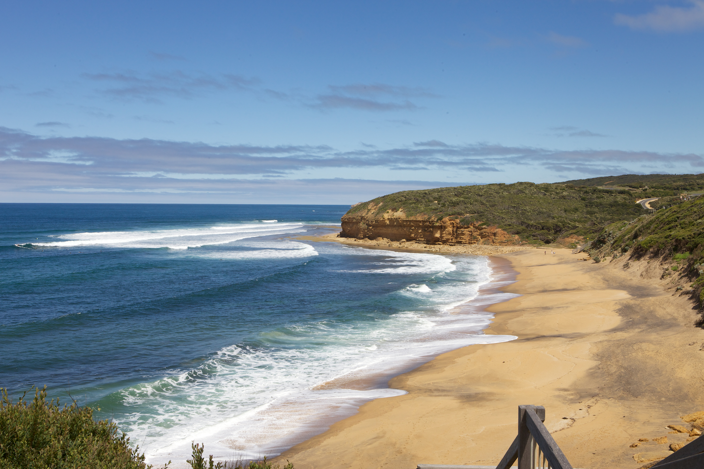
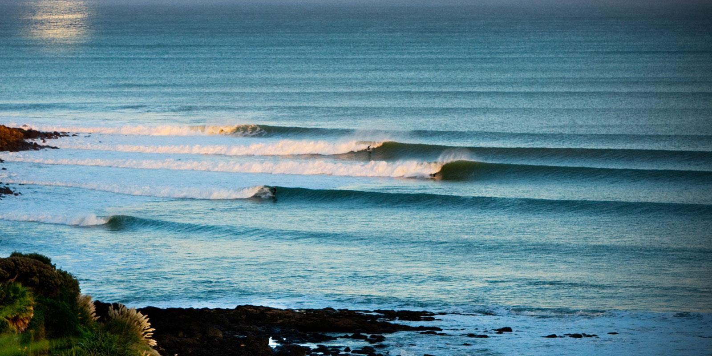
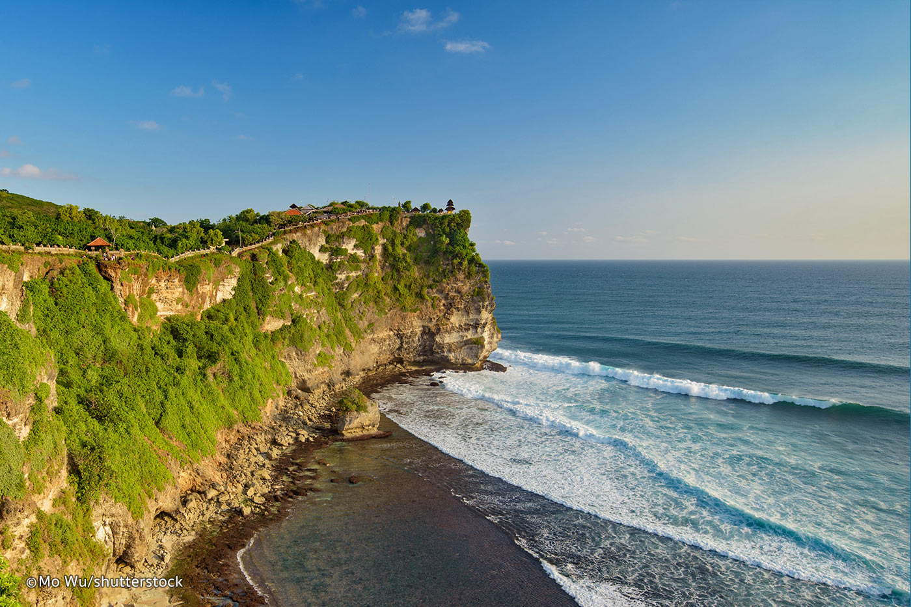

Erat autem diritatis eius hoc quoque indicium nec obscurum nec latens, quod ludicris cruentis delectabatur et in circo sex vel septem aliquotiens vetitis certaminibus pugilum vicissim se concidentium perfusorumque sanguine specie ut lucratus ingentia laetabatur. Erat autem diritatis eius hoc quoque indicium nec obscurum nec latens, quod ludicris cruentis delectabatur et in circo sex vel septem aliquotiens vetitis certaminibus pugilum vicissim se concidentium perfusorumque sanguine specie ut lucratus ingentia laetabatur.
|  |
Bell beachVictoria’s most famous surf spot is a classic and consistent right point that breaks on almost any tide, any wind and any decent swell from SE-SW. It’s a long wave broken into 3 sections (which may just link up in huge swells), starting outside at Rincon, leading into Bell's Bowl and finishing in the beach shorebreak. |
|  |
RaglanCovering the famous point from indicators and including Whale Bay and Manu Bay |
|  |
UluwatuUltra-consistent “Ulu’s” is the focal point of Balinese surfing thanks to it’s ability to handle any size swell from small to large and spread the biggest of crowds across a wide playing field of reef. It’s sectioning, hollow walls always produce great waves, starting with faster, high tide, occasional tuck-ins up at Temples that lead down to the muscular, steep drops of The Peak that offers open face with hollow pockets directly in front of the famous cave. |